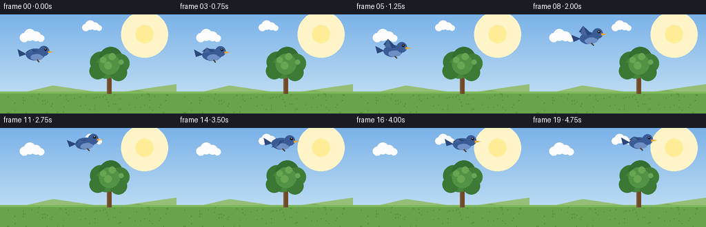
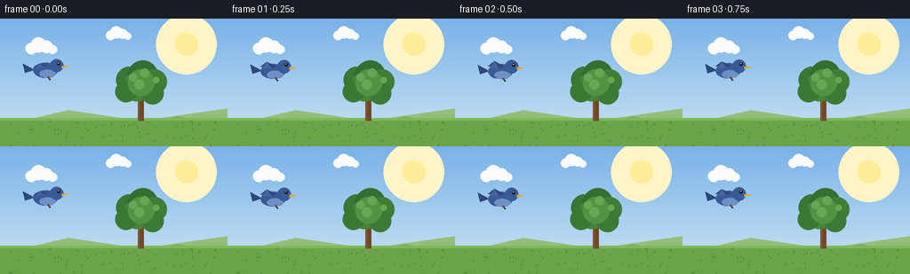

CODING AGENTS AS PIXEL WORLD MODELS
traex/Seed-2.1-Pro-0915 · dynamic_spatial_relationship_0048
点击播放 · 原生 RGB 像素
逐轮保存的候选
回放视频、检查图与代码变化。
每份候选均可单独播放。实际图片检查记录在下方工具轨迹中。
候选 01播放与检查图
点击播放 · 原生 RGB 像素


展开代码变化
--- 上一保存版本
+++ 本次保存版本
@@ -0,0 +1,213 @@
+"""Text-to-video: a bird is on the left of a tree, then flies above the tree.
+
+Renders 20 RGB frames (256x144 @ 4fps) with PIL at 2x supersampling.
+"""
+import math
+import numpy as np
+from PIL import Image, ImageDraw
+
+import artifact_io
+
+W, H, N, FPS = 256, 144, 20, 4
+SS = 2 # supersampling factor
+
+
+def lerp(a, b, t):
+ return a + (b - a) * t
+
+
+def ease(t):
+ """Smoothstep ease in/out."""
+ return t * t * (3 - 2 * t)
+
+
+def draw_sky(img):
+ w, h = img.size
+ top = np.array([122, 178, 232], dtype=float)
+ bottom = np.array([205, 230, 245], dtype=float)
+ grad = np.zeros((h, w, 3), dtype=np.uint8)
+ for y in range(h):
+ t = y / (h - 1)
+ grad[y, :] = (top * (1 - t) + bottom * t).astype(np.uint8)
+ img.paste(Image.fromarray(grad), (0, 0))
+
+
+def draw_sun(d, w, h):
+ sx, sy, r = w * 0.82, h * 0.20, 26
+ for i in range(6, 0, -1):
+ rr = r + i * 7
+ d.ellipse([sx - rr, sy - rr, sx + rr, sy + rr],
+ fill=(255, 244, 200))
+ d.ellipse([sx - r, sy - r, sx + r, sy + r], fill=(255, 236, 150))
+
+
+def draw_cloud(d, cx, cy, s=1.0):
+ for dx, dy, r in [(-22, 4, 13), (-6, -4, 17), (12, 0, 14), (26, 6, 10)]:
+ d.ellipse([cx + dx * s - r * s, cy + dy * s - r * s,
+ cx + dx * s + r * s, cy + dy * s + r * s],
+ fill=(252, 252, 252))
+
+
+def draw_hills(d, w, ground_y):
+ d.polygon([(0, ground_y + 18), (w * 0.3, ground_y - 18),
+ (w * 0.62, ground_y + 6), (w, ground_y - 22),
+ (w, ground_y + 40), (0, ground_y + 40)],
+ fill=(150, 190, 120))
+ d.polygon([(0, ground_y + 26), (w * 0.22, ground_y + 2),
+ (w * 0.5, ground_y + 22), (w * 0.78, ground_y - 4),
+ (w, ground_y + 16), (w, ground_y + 40), (0, ground_y + 40)],
+ fill=(124, 172, 96))
+
+
+def draw_ground(d, w, h, ground_y):
+ d.rectangle([0, ground_y, w, h], fill=(106, 164, 74))
+ d.rectangle([0, ground_y, w, ground_y + 5], fill=(128, 184, 92))
+ rng = np.random.RandomState(7)
+ for _ in range(70):
+ gx = rng.randint(0, w)
+ gy = rng.randint(ground_y + 6, h - 2)
+ d.line([gx, gy + 3, gx, gy - 2], fill=(84, 140, 58))
+ d.line([gx, gy + 3, gx - 2, gy], fill=(84, 140, 58))
+ d.line([gx, gy + 3, gx + 2, gy], fill=(84, 140, 58))
+
+
+def draw_tree(d, tx, ground_y):
+ """tx = tree center x; base at ground_y."""
+ trunk_w = 13
+ trunk_top = ground_y - 62
+ d.rectangle([tx - trunk_w / 2, trunk_top, tx + trunk_w / 2, ground_y + 6],
+ fill=(110, 74, 42))
+ d.rectangle([tx - trunk_w / 2, trunk_top, tx - trunk_w / 2 + 3, ground_y + 6],
+ fill=(128, 88, 52))
+ d.line([tx, trunk_top + 14, tx - 18, trunk_top - 8], fill=(110, 74, 42), width=5)
+ d.line([tx, trunk_top + 10, tx + 16, trunk_top - 12], fill=(110, 74, 42), width=5)
+ clusters = [
+ (-26, -24, 30, (58, 118, 52)),
+ (4, -34, 34, (52, 110, 48)),
+ (30, -20, 28, (64, 126, 56)),
+ (-10, -8, 32, (70, 134, 60)),
+ (-34, 2, 24, (58, 120, 52)),
+ (26, 6, 25, (60, 122, 54)),
+ (0, -18, 30, (82, 146, 68)),
+ ]
+ for dx, dy, r, color in clusters:
+ cx, cy = tx + dx, trunk_top + dy
+ d.ellipse([cx - r, cy - r, cx + r, cy + r], fill=color)
+ for dx, dy, r in [(-18, -30, 9), (8, -40, 10), (34, -24, 7), (-4, -14, 11)]:
+ cx, cy = tx + dx, trunk_top + dy
+ d.ellipse([cx - r, cy - r, cx + r, cy + r], fill=(104, 166, 84))
+
+
+def draw_bird(d, cx, cy, scale, flap, facing=1, tilt=0.0):
+ """Bird centered at (cx, cy). flap in [-1, 1] wing position."""
+ s = scale
+ body_col = (58, 92, 150)
+ belly_col = (110, 144, 196)
+ wing_col = (44, 72, 124)
+
+ def rot(px, py):
+ ca, sa = math.cos(tilt), math.sin(tilt)
+ return (cx + (px * ca - py * sa) * s * facing,
+ cy + (px * sa + py * ca) * s)
+
+ def poly_local(points, fill):
+ d.polygon([rot(px, py) for px, py in points], fill=fill)
+
+ def ellipse_local(box, fill):
+ n = 24
+ x0, y0, x1, y1 = box
+ out = []
+ for i in range(n):
+ a = 2 * math.pi * i / n
+ px = (x0 + x1) / 2 + (x1 - x0) / 2 * math.cos(a)
+ py = (y0 + y1) / 2 + (y1 - y0) / 2 * math.sin(a)
+ out.append(rot(px, py))
+ d.polygon(out, fill=fill)
+
+ # tail
+ poly_local([(-11, 0), (-22, -6), (-20, 3)], fill=wing_col)
+ # body and belly
+ ellipse_local([-12, -7, 12, 8], fill=body_col)
+ ellipse_local([-6, 0, 10, 8], fill=belly_col)
+ # head
+ hx, hy = rot(11, -4)
+ hr = 6.5 * s
+ d.ellipse([hx - hr, hy - hr, hx + hr, hy + hr], fill=body_col)
+ # beak
+ bx, by = rot(16, -4)
+ d.polygon([(bx, by), (bx + 7 * s, by + 1 * s), (bx, by + 3 * s)],
+ fill=(232, 162, 52))
+ # eye
+ ex, ey = rot(13, -6)
+ d.ellipse([ex - 1.6 * s, ey - 1.6 * s, ex + 1.6 * s, ey + 1.6 * s],
+ fill=(20, 24, 30))
+ d.ellipse([ex - 0.6 * s, ey - 1.0 * s, ex + 0.2 * s, ey - 0.2 * s],
+ fill=(255, 255, 255))
+ # flapping wing around shoulder near (-2, -3)
+ lift = flap * 11
+ poly_local([(-2, -3), (4, -4), (-6, -6 - lift), (-12, -2 - lift * 0.7)],
+ fill=wing_col)
+ poly_local([(-2, -3), (-6, -6 - lift), (-10, -1 - lift * 0.5)],
+ fill=(70, 102, 158))
+ # tiny tucked leg
+ lx, ly = rot(2, 7)
+ d.line([lx, ly, lx + 3 * s, ly + 3 * s], fill=(80, 60, 40),
+ width=max(1, int(1.4 * s)))
+
+
+def main():
+ sw, sh = W * SS, H * SS
+ ground_y = int(sh * 0.78)
+ tree_x = int(sw * 0.62)
+
+ start = (sw * 0.20, sh * 0.40) # left of the tree
+ end = (tree_x, sh * 0.16) # above the tree
+ hold0, fly_end = 3, 16 # frame indices
+
+ base = Image.new("RGB", (sw, sh))
+ draw_sky(base)
+ bd = ImageDraw.Draw(base)
+ draw_sun(bd, sw, sh)
+ draw_cloud(bd, sw * 0.18, sh * 0.22, 1.0)
+ draw_cloud(bd, sw * 0.52, sh * 0.12, 0.8)
+ draw_hills(bd, sw, ground_y)
+ draw_ground(bd, sw, sh, ground_y)
+ draw_tree(bd, tree_x, ground_y)
+
+ frames = []
+ for i in range(N):
+ img = base.copy()
+ d = ImageDraw.Draw(img)
+
+ if i <= hold0:
+ t = 0.0
+ elif i >= fly_end:
+ t = 1.0
+ else:
+ t = ease((i - hold0) / (fly_end - hold0))
+
+ # arc path rising above the chord midpoint
+ bx = lerp(start[0], end[0], t)
+ by = lerp(start[1], end[1], t) - math.sin(t * math.pi) * sh * 0.10
+
+ if t >= 1.0:
+ by += math.sin((i - fly_end) * 1.4) * 2 * SS
+ if t == 0.0:
+ by += math.sin(i * 0.9) * 1.5 * SS
+
+ flap = math.sin(i * 1.7) if 0 < t < 1 else math.sin(i * 0.8) * 0.35
+ tilt = -0.25 * math.sin(t * math.pi) * (1 if t < 0.85 else -1)
+
+ draw_bird(d, bx, by, scale=1.15 * SS, flap=flap, facing=1,
+ tilt=tilt * 0.5)
+
+ img = img.resize((W, H), Image.Resampling.LANCZOS)
+ frames.append(np.asarray(img, dtype=np.uint8))
+
+ frames = np.stack(frames)
+ artifact_io.save(frames, ".")
+ print(f"saved {frames.shape}")
+
+
+if __name__ == "__main__":
+ main()
可观测工具轨迹
实际执行的命令与返回图片。
命令 1exit 0
/bin/bash -lc 'cat prompt.txt GENERATION_RULES.md task_spec.json 2>/dev/null; ls -la'
命令 2exit 0
/bin/bash -lc 'cat artifact_io.py'
命令 3exit 0
/bin/bash -lc 'cd . && python generate.py && ls -la'
命令 4exit 1
/bin/bash -lc "cd . && python - <<'EOF'
import numpy as np
d = np.load('pixels.npz')['pixels'] # H,W,N packed
H,W,N = d.shape
frames = np.zeros((N,H,W,3),np.uint8)
frames[...,0]= (d>>16)&255; frames[...,1]=(d>>8)&255; frames[...,2]=d&255
# bird blue: B notably > R, moderate-dark blue
for i in [0,3,6,9,12,15,16,19]:
f=frames[i]
mask=(f[...,2].astype(int)-f[...,0]>40)&(f[...,2]>90)&(f[...,0]<120)
ys,xs=np.where(mask)
if len(xs):
print(f\"f{i:02d}: bird centroid x={xs.mean():.0f} y={ys.mean():.0f} n={len(xs)}\")
else:
print(f\"f{i:02d}: none\")
# tree trunk x around 0.62*256=159; above means y well above canopy (~canopy top)
EOF"命令 5exit 0
/bin/bash -lc "cd . && python - <<'EOF'
import numpy as np
t = np.load('pixels.npz')['pixels'] # H,W,N
d = np.transpose(t,(2,0,1))
N,H,W = d.shape
frames = np.zeros((N,H,W,3),np.uint8)
frames[...,0]= (d>>16)&255; frames[...,1]=(d>>8)&255; frames[...,2]=d&255
print(\"shape\",frames.shape)
for i in range(N):
f=frames[i]
mask=(f[...,2].astype(int)-f[...,0]>40)&(f[...,2]>90)&(f[...,0]<120)
ys,xs=np.where(mask)
if len(xs):
print(f\"f{i:02d}: x={xs.mean():5.1f} y={ys.mean():5.1f} n={len(xs):4d}\")
# canopy top estimate: green pixels column near tree x=159
green=(frames[0,...,1].astype(int)-frames[0,...,0]>30)&(frames[0,...,1]>100)
gy,gx=np.where(green & (np.arange(W)[None,:]>130) & (np.arange(W)[None,:]<190))
print(\"canopy y range near trunk:\",gy.min(),gy.max(),\"trunk x~159\")
EOF"命令 6exit 0
/bin/bash -lc "cd . && python - <<'EOF'
import numpy as np
from PIL import Image
f=np.array(Image.open('frames/00.png'))
green=(f[...,1].astype(int)-f[...,0]>30)&(f[...,1]>100)
ys,xs=np.where(green&(np.arange(256)[None,:]>130)&(np.arange(256)[None,:]<190)&(np.arange(144)[:,None]<110))
print(\"canopy top y:\",ys.min(),\"-> bird final y~20 is above canopy top:\", 20<ys.min())
# bird start vs trunk: start x 57 < 159 clearly left
# verify all 20 frames exist and valid
import glob
print(\"frames:\",len(glob.glob('frames/*.png')))
EOF"命令 7exit 0
/bin/bash -lc "cd . && python - <<'EOF'
import numpy as np
from PIL import Image
f=np.array(Image.open('frames/00.png'))
green=(f[...,1].astype(int)-f[...,0]>30)&(f[...,1]>100)
col=(np.arange(256)[None,:]>130)&(np.arange(256)[None,:]<190)
ys,xs=np.where(green&col)
order=np.argsort(ys)
for k in order[:8]:
print(ys[k],xs[k],f[ys[k],xs[k]])
EOF"保存候选 1 份；完成命令 7 次；可验证图片返回 0 张。原始 API 响应与完整日志保留在本地。